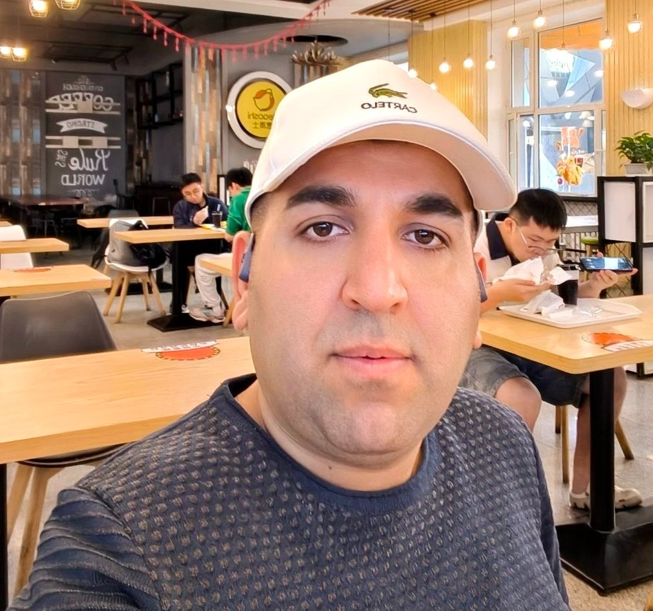
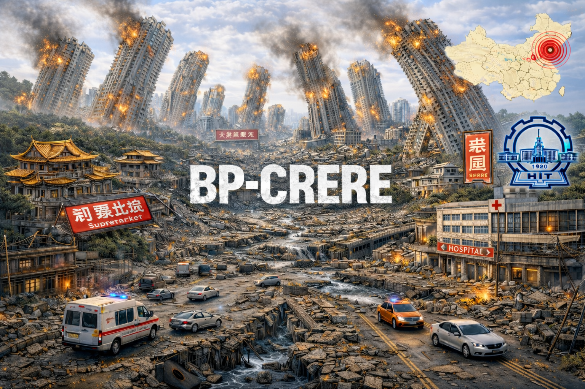

Impact of structure height on retrofitted RC structures for progressive collapse prevention
Journal of Building Pathology and Rehabilitation

PhD Candidate / Researcher
My name is Mohammad Bigonah, a researcher in structural and earthquake engineering, focused on enhancing the resilience of buildings and urban systems against earthquakes. During my PhD at the Harbin Institute of Technology, I worked on post-earthquake structural performance and the impact of environmental factors such as temperature on building functionality.
My research covers post-earthquake building function, building portfolio analysis at the city scale, urban casualty estimation, recovery and resilience modeling, and progressive collapse.
I integrate structural engineering with artificial intelligence, machine learning, and the Belief Rule-Based (BRB) approach to handle uncertainty and improve prediction accuracy. My goal is to develop reliable and scalable tools to support seismic resilience and sustainable infrastructure.

I am open to collaboration with motivated students and researchers on topics related to structural analysis, progressive collapse, and risk assessment. If you are interested, feel free to contact me with your CV and a brief description of your background and research interests.
Key Lab of Smart Prevention and Mitigation of Civil Engineering Disasters, Harbin Institute of Technology, Harbin, China
Dissertation Title: Building Portfolio Earthquake Resilience Evaluation and Improvement of City in Cold Regions
Supervisor: Professor Shuang Li
Earthquake Engineering, School of Civil Engineering, Iran University of Science & Technology, Tehran, Iran
Dissertation Title: New Techniques for Retrofitting RC Frames Against Progressive Collapse
Supervisor: Professor Mohsen Ali Shayanfar

Email is the best way to reach me:
bigonah@stu.hit.edu.cn